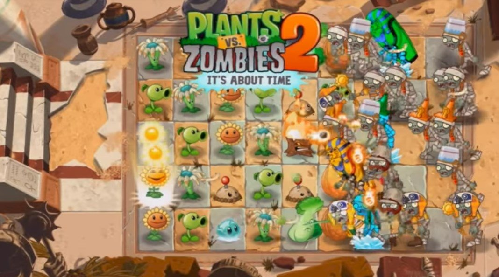

Plants vs Zombies 2
Plants vs Zombies 2 is a game created by PopCap in 2013, and is arguably one of the best PopCap games. The objective in the game is to defeat zombies using the plants you have so Dave, the protagonist, can have his taco. There are 3 different types of game modes in the game: Adventure, Arena and Penny’s Pursuit - both arena and penny’s pursuit have to be unlocked by playing Adventure.
There are 11 Adventure worlds starting from Ancient Egypt to Modern Day. These worlds contain around 23-26 levels on average. In each level, there is an objective. Objective varies from surviving a zombie attack (with or without lawnmowers), to protecting endangered plants. In the game, you have 5 lanes to protect, and most of the time you get 5 lawnmowers, which the zombies can destroy. If they destroy the same lane twice, you lose the level, and same applies if they destroy a lane when you don’t have lawnmowers. Levels vary as some levels make you choose your plants, and other levels give you plants. Note that some levels contain some of Dave's mold colonies, and you are not allowed to place plants on those spots. When you reach the last level of each world, you must face the biggest villain, Dr. Zomboss, and be able to defeat his cult with given plants.
There are also endless zones featured in each adventure world. You start with the 3 most basic plants, the sunflower, the peashooter. and you keep picking cards that determine the plant you get. The difficulty of the levels in each of the endless zones should be about just as hard as how hard the levels were in the adventure world. In contrast, lawnmowers and plant food in the endless zones are carried over to the next level so sometimes you may have to either save your plant food or sometimes have to prioritize one lane over another.
Arena is another game mode which is similar to Adventure, except that you are playing against another person. Both players face the same zombies and both players get infinite lawnmowers. In arena, you get one free play and after that you need to spent one gauntlet to play each match. Gauntlets can be purchased by spending money or gems. If you win a game, you earn five trophies, whereas if you lose, you only get one. You will get rewards, if you maintain a winning streak, and it resets after you have won 10 games in a row. One thing to keep in mind is that there is a section called “Buffs and Bruises,” which tells you what plants will do well and what plants do poorly. This feature helps many players with their plant choices. Each season, a new plant is released and you can get the plant by getting seed packets after gaining trophies. If you get 500 trophies, you will get enough seed packets in order to unlock the new plant. If you are unable to get the featured plant during the time you are given in the season to get 500 trophies, you can always get it later if you get seed packets for the plant.
The last game mode that was recently made in 2020 is Penny's Pursuit. As mentioned before, you have to unlock it by playing adventure. Every match you play on Penny's Pursuit you have to spend 5 Penny Fuel and you can watch adds to get Penny Fuel as well. You can also select the difficulty of the level on a scale from 1 to 3, and rewards also vary. You can also face Dr Zomboss in boss fights in Penny's pursuit, and once you beat the boss, you can defeat extra zombies for extra gems and coins. The best thing about Penny's Pursuit is that you can play whatever level that suits you the best. It's very flexible.
In the shop, there are many things you can buy, varying from plants
to pinatas. You get a free reward everyday for playing the game.
There are also quests that you can play to get rewards as well, such
as playing the pinata party everyday. Sometimes, the game will offer
additional challenge quests that you can get many gems as a reward.
Gems and coins can be bought using money or watching ads (though
there is a limit for watching ads).
Vase breaking is also another game mode in Plants vs Zombies 2. The gist of the game is that you're supposed to break vases and survive the zombies without using any lawnmowers. Some vases are green, indicating that there are plants inside those vases. On the other hand, some vases are purple and have gargantuar zombies inside the vases. For the vases that are bronze/brown, those vases could either contain zombies or plants. There is also an endless zone for vase breaking and you can save up your sun to get cherry bombs.